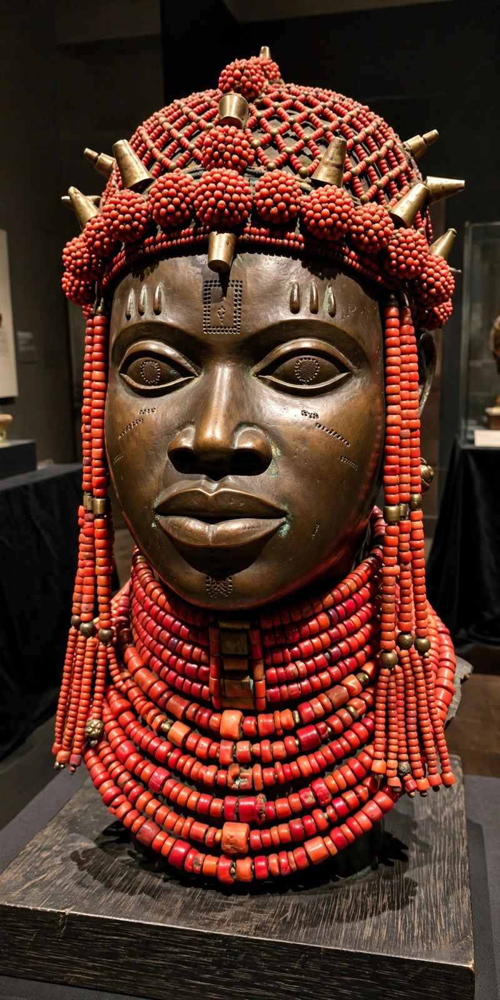

Benin Bronzes
The Benin Bronzes are a group of several thousand metal plaques and sculptures that decorated the royal palace of the Kingdom of Benin, in what is now Edo State, Nigeria. Collectively, the objects form the best known examples of Benin art, created from at least the 16th century onward by specialist guilds of metalworkers working for the royal court, using the lost-wax (cire perdue) casting technique. Many depict obas (kings), queen mothers (iyobas), warriors, courtiers and Portuguese traders.
 | |
| Medium | Brass and bronze (also ivory and wood pieces in the wider corpus) |
|---|---|
| Period | 16th–19th centuries (some works earlier) |
| Location | Originally the Royal Palace, Benin City; now in museums worldwide, with major restitution programmes returning works to Nigeria |
History
Benin's brasscasting tradition is associated in oral history with the reign of Oba Ewuare the Great (c. 1440s) and the master founder Igue-Igha. The plaques, cast in relief, were fixed to the wooden pillars of the palace courtyard and formed a visual chronicle of court life and warfare; freestanding commemorative heads were placed on royal altars.
In February 1897 a British punitive expedition under Admiral Sir Harry Rawson sacked and burned Benin City in reprisal for the ambush of a British party. The expedition looted the palace treasury — thousands of bronzes, ivories and other objects — which were subsequently sold and dispersed to museums and collectors, notably in Britain and Germany; the British Museum came to hold over 900 pieces, the largest single collection.
Restitution
Nigeria has sought the bronzes' return since independence. The campaign intensified after 2017, and major returns followed: Jesus College, Cambridge returned a bronze cockerel (Okukor) in 2021, the first UK institution to do so; in 2022 Germany transferred ownership of more than 1,100 objects to Nigeria, the Horniman Museum in London returned 72 items, and the Smithsonian returned 29. The British Museum, legally constrained by the British Museum Act 1963, has engaged in loans and partnership talks, with the planned Edo Museum of West African Art in Benin City intended to house returned works. The restitution debate has made the Benin Bronzes the emblematic case of the broader movement for the return of colonial-era loot.
See also
Categories: Benin art · African sculpture · Repatriation · British Museum